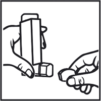
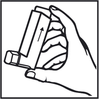
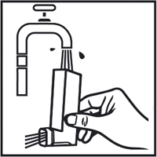
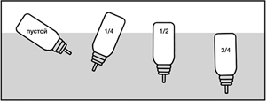

|
 |
| АСТМАСОЛ® НЕО (ASTMASOL NEO) ipratropium bromide, fenoterol аэрозоль д/ингаляций дозир. | ||||||||||
|
Клинико-фармакологическая группа: Бронхолитический препарат Номер и дата регистрации: ЛП-006027 от 13.01.20 Код ATX: R03AL01 |
Владелец регистрационного удостоверения: зарегистрировано и произведено Представительство: | |||||||||
Форма выпуска, состав и упаковка Аэрозоль для ингаляций дозированный в виде прозрачного, бесцветного или слегка желтоватого, или слегка коричневатого раствора.
Вспомогательные вещества: этанол безводный (спирт этиловый абсолютированный) или этанол 96% (спирт этиловый 96%) (в пересчете на безводное вещество) - 13.313 мг, лимонная кислота безводная - 0.001 мг, пропеллент HFA-134a (1,1,1,2-тетрафторэтан) - 39.07 мг, вода д/и - q.s. до 53.254 мг. 200 доз - баллоны из нержавеющей стали (1) с дозирующим клапаном и распылительной насадкой - пачки картонные. | ||||||||||
| ||||||||||
Описание препарата основано на официально утвержденной инструкции по применению и утверждено компанией-производителем для издания 2023 г. | ||||||||||
Фармакологическое действие |
Фармакокинетика |
Показания |
Режим дозирования |
Побочное действие |
Противопоказания |
Беременность и лактация |
Особые указания |
Передозировка |
Лекарственное взаимодействие |
Условия хранения и сроки годности |
Условия реализации
Фармакологическое действие
Препарат содержит два компонента, обладающих бронхолитической активностью: ипратропия бромид – м-холиноблокатор и фенотерол – бета2-адреномиметик. Бронходилатация при ингаляционном введении ипратропия бромида обусловлена, главным образом, местным, а не системным антихолинергическим действием. Ипратропия бромид является четвертичным производным аммония, обладающим антихолинергическими (парасимпатолитическими) свойствами. Ипратропия бромид тормозит рефлексы, вызываемые блуждающим нервом. Антихолинергические средства предотвращают повышение внутриклеточной концентрации ионов кальция, что происходит вследствие взаимодействия ацетилхолина с мускариновыми рецепторами гладких мышц бронхов. Высвобождение ионов кальция опосредуется системой вторичных медиаторов, в число которых входят инозитола трифосфат (ИТФ) и диацилглицерин (ДАГ). У пациентов с бронхоспазмом, связанным с хроническими обструктивными заболеваниями легких (хронический бронхит и эмфизема легких), значительное улучшение функции легких (увеличение объема форсированного выдоха за 1 сек (ОФВ1) и пиковой скорости выдоха (ПСВ) на 15% и более) отмечается в течение 15 мин, максимальный эффект достигается через 1-2 ч и продолжается у большинства пациентов до 6 ч после введения. Ипратропия бромид не оказывает отрицательного влияния на секрецию слизи в дыхательных путях, мукоцилиарный клиренс и газообмен. Фенотерол избирательно стимулирует β2-адренорецепторы в терапевтической дозе. Стимуляция β1-адренорецепторов происходит при применении высоких доз. Фенотерол расслабляет гладкую мускулатуру бронхов и сосудов и противодействует развитию бронхоспастических реакций, обусловленных влиянием гистамина, метахолина, холодного воздуха и аллергенов (реакции гиперчувствительности немедленного типа). Сразу после введения фенотерол блокирует высвобождение медиаторов воспаления и бронхообструкции из тучных клеток. Кроме того, при применении фенотерола в дозах 0.6 мг отмечалось усиление мукоцилиарного клиренса. Бета-адренергическое (стимулирующее β-адренорецепторы) влияние препарата на сердечную деятельность, такое как увеличение частоты и силы сердечных сокращений, обусловлено сосудистым действием фенотерола, стимуляцией β2-адренорецепторов сердца, а при применении в дозах, превышающих терапевтические, стимуляцией β1-адренорецепторов. Как и при применении других бета-адренергических лекарственных средств отмечается удлинение интервала QTc при применении в высоких дозах. При использовании фенотерола с помощью дозированных аэрозольных ингаляторов (ДАИ) этот эффект был непостоянным и отмечался в случае применения доз, превышающих рекомендуемые. Однако после применения фенотерола с помощью небулайзеров (раствор для ингаляций во флаконах или тюбик-капельницах со стандартной дозой) системное воздействие может быть выше, чем при использовании препарата с помощью ДАИ в рекомендуемых дозах. Клиническое значение этих наблюдений не установлено. Наиболее часто наблюдаемым эффектом агонистов β-адренорецепторов является тремор. В отличие от воздействия на гладкие мышцы бронхов, к системным влияниям агонистов β-адренорецепторов может развиваться толерантность, клиническая значимость этого проявления не выяснена. Тремор является наиболее частым нежелательным эффектом при использовании агонистов β-адренорецепторов. При совместном применении этих двух действующих веществ бронхорасширяющий эффект достигается путем воздействия на различные фармакологические мишени. Указанные вещества дополняют друг друга, в результате усиливается спазмолитический эффект на мышцы бронхов и обеспечивается большая широта терапевтического действия при бронхо-легочных заболеваниях, сопровождающихся констрикцией дыхательных путей. Взаимодополняющее действие таково, что для достижения желаемого эффекта требуется более низкая доза бета-адренергического компонента, что позволяет индивидуально подобрать эффективную дозу при практическом отсутствии побочных эффектов. При острой бронхоконстрикции эффект препарата развивается быстро, что позволяет использовать его при острых приступах бронхоспазма. Фармакокинетика
Отсутствуют доказательства того, что фармакокинетика комбинированного препарата, содержащего ипратропия бромид и фенотерол, отличается от таковой каждого из отдельных компонентов. Всасывание Ипратропия бромид. При ингаляционном пути введения для ипратропия бромида характерна крайне низкая абсорбция со слизистой оболочки дыхательных путей. Концентрация ипратропия бромида в плазме крови находится на нижней границе определения, и измерить ее можно лишь при применении высоких доз действующего вещества. После ингаляции в легкие обычно попадает (в зависимости от лекарственной формы и метода ингаляции) 10-30% от вводимой дозы ипратропия бромида. Большая часть дозы проглатывается и поступает в ЖКТ. Часть дозы ипратропия бромида, попадающая в легкие, быстро достигает системного кровотока (в течение нескольких минут). Общая системная биодоступность ипратропия бромида, применяемого внутрь и ингаляционно, составляет 2% и 7-28% соответственно. Фенотерол. В зависимости от метода ингаляции и используемой ингаляционной системы около 10-30% фенотерола достигает нижних дыхательных путей, а остальная часть депонируется в верхних дыхательных путях и проглатывается. В результате некоторое количество ингалируемого фенотерола попадает в ЖКТ. Всасывание носит двухфазный характер – 30% фенотерола быстро всасывается с T1/2 11 мин, и 70% всасывается медленно с T1/2 120 мин. Не существует корреляции между концентрациями фенотерола в плазме крови, достигаемыми после ингаляции, и фармакодинамической кривой "время-эффект". Длительный (3-5 ч) бронхорасширяющий эффект препарата после ингаляции, сравнимый с соответствующим эффектом, достигаемым после в/в введения, не поддерживается высокими концентрациями фенотерола в системном кровотоке. После введения внутрь всасывается около 60% фенотерола. Время достижения Cmax в плазме крови составляет 2 ч. Распределение Ипратропия бромид, являющийся четвертичным амином, плохо растворяется в жирах и слабо проникает через биологические мембраны. Не кумулирует. Ипратропия бромид связывается с белками плазмы крови в минимальной степени (менее чем на 20%). Нет данных о возможности проникновения ипратропия бромида через плацентарный барьер и в грудное молоко. Фенотерол интенсивно распределяется по органам и тканям. Связывание с белками плазмы крови составляет 40-55%. Фенотерол в неизменном виде проникает через плацентарный барьер и выделяется с грудным молоком. Метаболизм Ипратропия бромид метаболизируется путем окисления главным образом в печени. Известно до 8 метаболитов ипратропия бромида, которые слабо связываются с мускариновыми рецепторами и считаются неактивными. Фенотерол метаболизируется в печени. Через 24 ч 60% от введенной в/в дозы и 35% от пероральной дозы экскретируется с мочой. Эта доля фенотерола подвергается биотрансформации вследствие эффекта "первого прохождения" через печень, в результате чего биодоступность препарата после введения внутрь падает приблизительно до 1.5%. Этим объясняется то, что проглоченное количество препарата практически не оказывает никакого влияния на концентрацию действующего вещества в плазме крови, достигаемую после ингаляции. Биотрансформация фенотерола у человека происходит преимущественно путем конъюгации с сульфатами в стенке кишечника. Выведение Ипратропия бромид выводится преимущественно через кишечник, а также через почки. Около 25 % выводится в неизменном виде, остальная часть – в виде метаболитов. Фенотерол выводится почками и с желчью в виде неактивных сульфатных конъюгатов. При парентеральном введении фенотерол выводится соответственно трехфазной модели с T1/2 - 0.42 мин, 14.3 мин и 3.2 ч. Фармакокинетика у отдельных групп пациентов Фармакокинетика комбинированного препарата, содержащего ипратропия бромид и фенотерол, у пациентов с сахарным диабетом, пациентов пожилого и старшего возрастов, детей, а также у пациентов с нарушениями функции печени и почек не изучалась. Показания
Профилактика и симптоматическое лечение обструктивных заболеваний дыхательных путей с обратимой обструкцией дыхательных путей:
Режим дозирования
Дозу следует подбирать индивидуально. При отсутствии иных указаний врача рекомендуется применение препарата в следующих дозах. Взрослые и дети старше 6 лет Лечение приступов В большинстве случаев для купирования симптомов достаточно 2 ингаляционных доз аэрозоля. Если в течение 5 мин облегчения дыхания не наступило, можно использовать дополнительно 2 ингаляционные дозы. Если эффект отсутствует после 4 ингаляционных доз и требуются дополнительные ингаляции, следует немедленно обратиться за медицинской помощью. Прерывистая и длительная терапия По 1-2 ингаляции на один прием, до 8 ингаляций в сутки (в среднем по 1-2 ингаляции 3 раза/сут). При бронхиальной астме препарат должен применяться только по мере необходимости. Препарат у детей следует применять только по назначению врача и под контролем взрослых (см. раздел "Особые указания"). Инструкция по проведению ингаляций Пациенты должны быть проинструктированы о правильном использовании дозированного аэрозоля. Препарат предназначен только для ингаляционного применения. Перед первым использованием ингалятора или если ингалятором не пользовались неделю и дольше проверьте его работу. Для этого снимите защитный колпачок с распылительной насадки ингалятора, хорошо встряхните ингалятор, поверните ингалятор дном вверх и нажмите на дно баллона, выпуская первую дозу препарата в воздух, еще раз встряхните ингалятор и выпустите вторую дозу препарата в воздух. Проведение ингаляции 1. Снимите защитный колпачок с распылительной насадки ингалятора, как показано на рисунке 1.  Рис. 1 2. Энергично потрясите ингалятор. 3. Сделайте медленный, полный выдох. Не выдыхайте в ингалятор! 4. Удерживая баллон, как показано на рисунке 2, плотно обхватите губами распылительную насадку. Баллон должен быть направлен дном вверх (согласно стрелке на этикетке флакона)!  Рис. 2 5. Выполните максимально глубокий вдох, одновременно быстро нажмите на дно баллона до высвобождения одной ингаляционный дозы. 6. На несколько секунд задержите дыхание, затем выньте распылительную насадку изо рта и медленно выдохните через нос. 7. Наденьте защитный колпачок на распылительную насадку ингалятора. Повторите действия 2-6 для получения второй ингаляционной дозы, если это необходимо. Чистка ингалятора Регулярно (по крайней мере, один раз в неделю) следует промывать распылительную насадку ингалятора, как показано на рисунке 3.  Рис. 3 Выньте баллон из распылительной насадки и сполосните ее и колпачок теплой водой. Не пользуйтесь горячей водой. Тщательно высушите, но не используйте для этого нагревательные устройства. Поместите баллон обратно в распылительную насадку и наденьте колпачок. Баллон рассчитан на 200 ингаляций. После этого ингалятор следует заменить. Несмотря на то, что в баллоне может оставаться некоторое количество препарата, количество лекарственного вещества, высвобождающегося при ингаляции, может быть уменьшено. Баллон непрозрачен, поэтому количество препарата в нем можно определить следующим образом:
 Рис. 4 Применение препарата у детей должно проходить под контролем взрослых. Рекомендуется для предотвращения вдоха через нос во время ингаляции зажимать ноздри ребенка. Предупреждение: распылительная насадка для рта разработана специально для препарата Астмасол® нео и служит для точного дозирования препарата. Распылительная насадка не должна быть использована с другими дозированными аэрозолями. Также нельзя использовать препарат Астмасол® нео с какими-либо другими адаптерами, кроме распылительной насадки, поставляемой вместе с препаратом. Содержимое баллона находится под давлением. Баллон нельзя вскрывать и подвергать нагреванию. Побочное действие
Многие из перечисленных нежелательных эффектов могут быть следствием антихолинергических и β-адренергических свойств препарата. Применение препарата Астмасол® нео, как и любая ингаляционная терапия, может вызывать местное раздражение. Самыми частыми побочными эффектами, о которых сообщалось в клинических исследованиях, были кашель, сухость во рту, головная боль, тремор, фарингит, тошнота, головокружение, дисфония, тахикардия, сердцебиение, рвота, повышение систолического артериального давления и нервозность. Частота нежелательных реакций, которые могут возникнуть во время терапии, определялась в соответствии с рекомендациями всемирной организации здравоохранения: очень часто (≥1/10), часто (≥1/100, <1/10), нечасто (≥1/1000, <1/100), редко (≥1/10000, <1/1000), очень редко (<1/10000), неуточненной частоты (частота не может быть оценена по доступным данным). Со стороны иммунной системы: редко - анафилактическая реакция, гиперчувствительность. Со стороны обмена веществ и питания: редко - гипокалиемия. Нарушения психики: нечасто - нервозность; редко - возбуждение, ментальные нарушения. Со стороны нервной системы: нечасто - головная боль, тремор, головокружение. Со стороны органа зрения: редко - глаукома, увеличение внутриглазного давления, нарушения аккомодации, мидриаз, нечеткое зрение, боль в глазах, отек роговицы, гиперемия конъюнктивы, появление ореола вокруг предметов. Со стороны сердечно-сосудистой системы: нечасто - учащение сердечного ритма, тахикардия, ощущение сердцебиения; редко - аритмия, фибрилляция предсердий, наджелудочковая тахикардия, ишемия миокарда. Со стороны органов дыхания: часто - кашель; нечасто - фарингит, дисфония; редко - бронхоспазм, раздражение глотки, отек глотки, ларингоспазм, парадоксальный бронхоспазм, сухость глотки. Со стороны ЖКТ: нечасто - рвота, тошнота, сухость во рту; редко - стоматит, глоссит, нарушения моторики ЖКТ, диарея, запор, отек полости рта. Со стороны кожи и подкожных тканей: редко - крапивница, зуд, сыпь, ангионевротический отек, гипергидроз. Со стороны костно-мышечной системы и соединительной ткани: редко - мышечная слабость, спазм мышц, миалгия. Со стороны мочевыделительной системы: редко - задержка мочи. Лабораторные и инструментальные данные: нечасто - повышение систолического АД; редко - повышение диастолического АД. Противопоказания
С осторожностью Препарат следует применять с осторожностью у пациентов с такими заболеваниями, как закрытоугольная глаукома, коронарная недостаточность, артериальная гипертензия, недостаточно контролируемый сахарный диабет, недавно перенесенный инфаркт миокарда, тяжелые органические заболевания сердца и сосудов, гипертиреоз, феохромоцитома, гипертрофия предстательной железы, обструкция шейки мочевого пузыря, муковисцидоз, детский возраст. Применение при беременности и кормлении грудью
Беременность Существующий клинический опыт показал, что фенотерол и ипратропия не оказывают отрицательного действия на беременность. Тем не менее, при применении этих препаратов во время беременности должны соблюдаться обычные меры предосторожности, особенно в I триместре. Следует принимать во внимание ингибирующее влияние фенотерола на сократимость матки. Период грудного вскармливания Доклинические исследования показали, что фенотерола гидробромид может проникать в грудное молоко. В отношении ипратропия такие данные не получены. Существенное воздействие ипратропия на грудного ребенка, особенно в случае применения препарата в виде аэрозоля, маловероятно. Тем не менее, учитывая способность многих лекарственных препаратов проникать в грудное молоко, при назначении препарата Астмасол® нео женщинам, кормящим грудью, следует соблюдать осторожность. Особые указания
Одышка В случае неожиданного быстрого усиления одышки (затруднений дыхания) следует немедленно обратиться к врачу. Гиперчувствительность После применения препарата Астмасол® нео могут возникнуть реакции немедленной гиперчувствительности, признаками которой в редких случаях могут быть: крапивница, ангионевротический отек, сыпь, бронхоспазм, отек ротоглотки, анафилактический шок. Парадоксальный бронхоспазм Препарат Астмасол® нео, как и другие ингаляционные лекарственные средства, способен вызвать парадоксальный бронхоспазм, который может угрожать жизни. В случае развития парадоксального бронхоспазма применение препарата Астмасол® нео следует немедленно прекратить и перейти на альтернативную терапию. Длительное применение У пациентов с бронхиальной астмой препарат должен применяться только по мере необходимости. У пациентов с ХОБЛ легкой степени тяжести симптоматическое лечение может оказаться предпочтительнее регулярного применения. Пациентам, страдающим бронхиальной астмой, следует помнить о необходимости проведения или усиления противовоспалительной терапии для контроля воспалительного процесса дыхательных путей и течения заболевания. Регулярное применение возрастающих доз лекарственных средств, содержащих бета2-адреномиметики, таких как препарат Астмасол® нео, для купирования бронхиальной обструкции может вызвать неконтролируемое ухудшение течения заболевания. В случае усиления бронхиальной обструкции увеличение дозы бета2-адреномиметиков, в т.ч. препарата Астмасол® нео, больше рекомендуемой в течение длительного времени не только не оправдано, но и опасно. Для предотвращения угрожающего жизни ухудшения течения заболевания следует рассмотреть вопрос о пересмотре плана лечения пациента и адекватной противовоспалительной терапии ингаляционными ГКС. Другие симпатомиметические бронходилататоры следует назначать одновременно с препаратом Астмасол® нео только под медицинским наблюдением. Нарушения со стороны ЖКТ У пациентов, имеющих в анамнезе муковисцидоз, возможны нарушения моторики ЖКТ. Нарушения со стороны органа зрения Препарат Астмасол® нео должен применяться с осторожностью у пациентов, предрасположенных к закрытоугольной глаукоме. Известны отдельные сообщения об осложнениях со стороны органа зрения (например, повышение внутриглазного давления, мидриаз, закрытоугольная глаукома, боль в глазах), развившихся при попадании ингаляционного ипратропия бромида (или ипратропия бромида в сочетании с бета2-адреномиметиками) в глаза. Симптомами острой закрытоугольной глаукомы могут быть боль или дискомфорт в глазах, затуманивание зрения, появление ореола вокруг предметов и цветных пятен перед глазами в сочетании с отеком роговицы и покраснением глаз вследствие гиперемии конъюнктивы. Если развивается любая совокупность этих симптомов, показано применение глазных капель, снижающих внутриглазное давление, и немедленная консультация специалиста. Пациенты должны быть проинструктированы о правильном применении ингаляционного препарата Астмасол® нео. Особенно тщательно должны заботиться о защите глаз пациенты, предрасположенные к развитию глаукомы. Системные эффекты При таких заболеваниях, как недавно перенесенный инфаркт миокарда, сахарный диабет с неадекватным гликемическим контролем, тяжело протекающие органические заболевания сердца и сосудов, гипертиреоз, феохромоцитома или обструкция мочеиспускательных путей (например, при гиперплазии предстательной железы или обструкции шейки мочевого пузыря) препарат Астмасол® нео должен применяться только после тщательной оценки риск/польза, особенно при использовании доз, превышающих рекомендуемые. Влияние на сердечно-сосудистую систему Отмечались редкие случаи возникновения ишемии миокарда при приеме бета2-адреномиметиков. Пациентов с сопутствующими серьезными заболеваниями сердца (например, ИБС, аритмиями или выраженной сердечной недостаточностью), получающих препарат Астмасол® нео, следует предупреждать о необходимости обращения к врачу в случае появления болей в сердце или других симптомов, указывающих на ухудшение заболевания сердца. Необходимо обращать внимание на такие симптомы как одышка и боль в груди, т.к. они могут быть как сердечной, так и легочной этиологии. Гипокалиемия При применении бета2-адреномиметиков может возникать гипокалиемия (см. раздел "Передозировка"). Применение у спортсменов У спортсменов применение препарата Астмасол® нео в связи с наличием в его составе фенотерола может приводить к положительным результатам тестов на допинг. Вспомогательные вещества Следует учитывать, что препарат содержит небольшое количество этанола (13.313 мг в одной дозе). Использование в педиатрии У детей препарат Астмасол® нео следует примерять только по назначению врача и под контролем взрослых. Применение у детей младше 6 лет противопоказано в связи с отсутствием опыта применения. Меры предосторожности при применении Хранить вдали от отопительной системы и прямых солнечных лучей. Баллон не вскрывать. Предохранять от падений и ударов. Не бросать в огонь даже пустой баллон. Влияние на способность к управлению транспортными средствами и механизмами Исследований по изучению влияния препарата на способность к управлению транспортными средствами и механизмами не проводилось. Следует соблюдать осторожность при выполнении данных видов деятельности, т.к. возможно развитие головокружения, тремора, нарушения аккомодации глаз, мидриаза и нечеткого зрения. При возникновении указанных выше нежелательных ощущений следует воздержаться от таких потенциально опасных действий, как управление транспортными средствами и механизмами. Передозировка
Симптомы передозировки обычно связаны с действием фенотерола. Возможно появление симптомов, обусловленных избыточной стимуляцией β-адренорецепторов. Наиболее вероятно появление тахикардии, ощущения сердцебиения, тремора, артериальной гипертензии или артериальной гипотензии, увеличения разности между систолическим и диастолическим АД, увеличение пульсового давления, усиление болей, напоминающих стенокардию, аритмии и чувства "приливов" крови к лицу, метаболического ацидоза, гипокалиемии, чувство тяжести за грудиной, усиление бронхообструкции. Возможные симптомы передозировки ипратропия бромида (такие как сухость во рту, нарушение аккомодации глаз), учитывая большую широту терапевтического действия препарата и местный способ применения, обычно выражены слабо и имеют преходящий характер. Лечение: необходимо прекратить прием препарата. Следует учитывать данные мониторирования кислотно-щелочного баланса крови. Рекомендуется назначение седативных лекарственных средств, анксиолитических лекарственных средств (транквилизаторов), в тяжелых случаях – интенсивная терапия. В качестве специфического антидота возможно применение бета-адреноблокаторов, предпочтительно селективных бета1-адреноблокаторов. Однако следует помнить о возможном усилении бронхиальной обструкции под влиянием бета-адреноблокаторов и тщательно подбирать дозу для пациентов с бронхиальной астмой или хронической обструктивной болезнью легких в связи с опасностью развития тяжелого бронхоспазма, который может привести к смертельному исходу. Лекарственное взаимодействие
Длительное одновременное применение препарата с другими антихолинергическими препаратами не рекомендуется ввиду отсутствия данных. Одновременное применение других бета-адреномиметических и антихолинергических лекарственных средств, в т.ч. системного действия, и ксантиновых производных (например, теофиллина) может усилить бронхорасширяющее действие препарата и привести к усилению нежелательных реакций. Возможно значительное ослабление бронхорасширяющего действия препарата при одновременном назначении бета-адреноблокаторов. Гипокалиемия, связанная с применением бета-адреномиметиков, может быть усилена одновременным назначением ксантиновых производных, ГКС и диуретиков. Этому факту следует уделять особое внимание при лечении пациентов с тяжелыми формами обструктивных заболеваний дыхательных путей. Гипокалиемия может приводить к повышению риска возникновения аритмий у пациентов, получающих дигоксин. Кроме того, гипоксия может усиливать негативное влияние гипокалиемии на сердечный ритм. В подобных случаях рекомендуется проводить мониторирование концентрации калия в плазме крови. Следует с осторожностью назначать бета2-адренергические лекарственные средства пациентам, получавшим ингибиторы МАО и трициклические антидепрессанты, т.к эти лекарственные средства способны усиливать действие бета-адренергических средств. Ингаляции средств для общей анестезии, таких как галогенизированные углеводородные анестетики (галотан, трихлорэтилен, энфлуран), могут усилить неблагоприятное влияние бета-адренергических средств на сердечно-сосудистую систему. Совместное применение препарата с кромоглициевой кислотой и/или ГКС увеличивает эффективность терапии. |
||||||||||
Вернуться наверх |
||||||||||
Copyright © Справочник Видаль «Лекарственные препараты в России», Москва, Россия